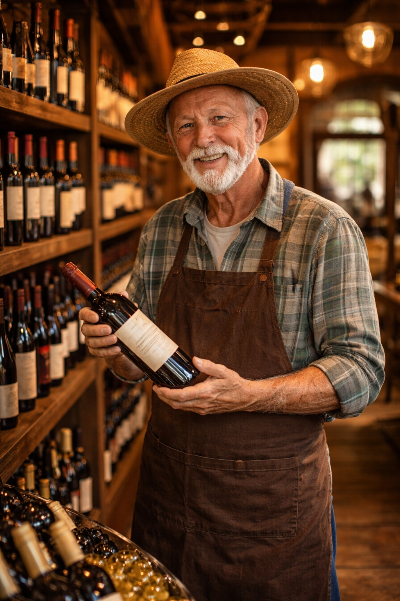
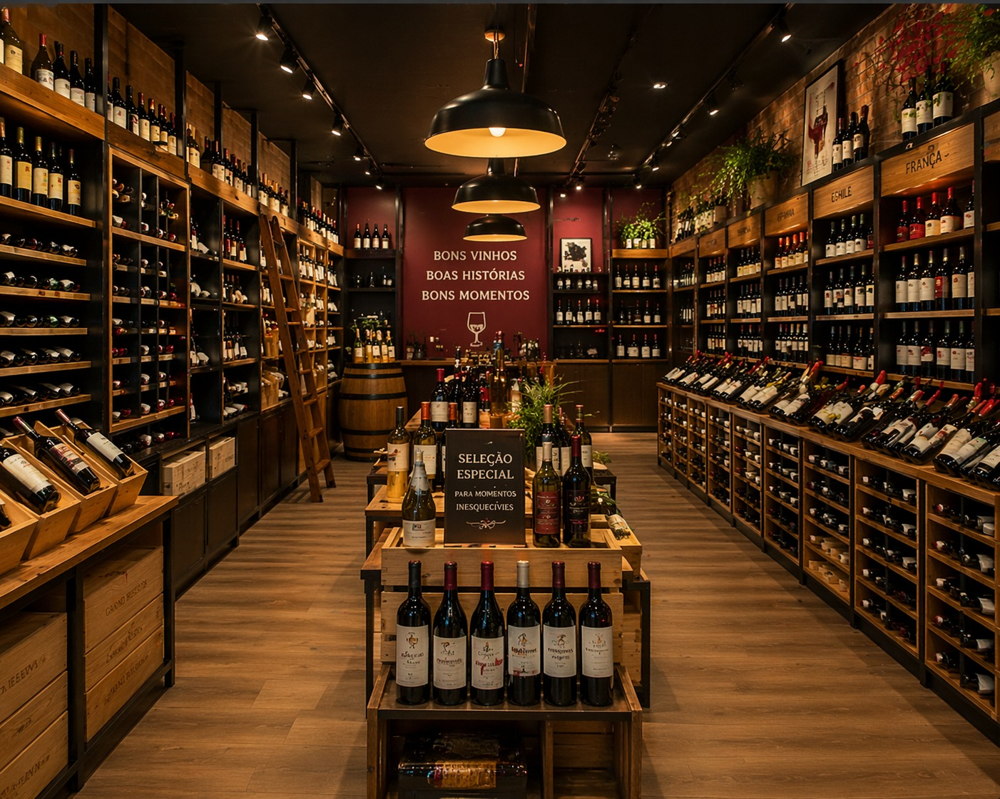
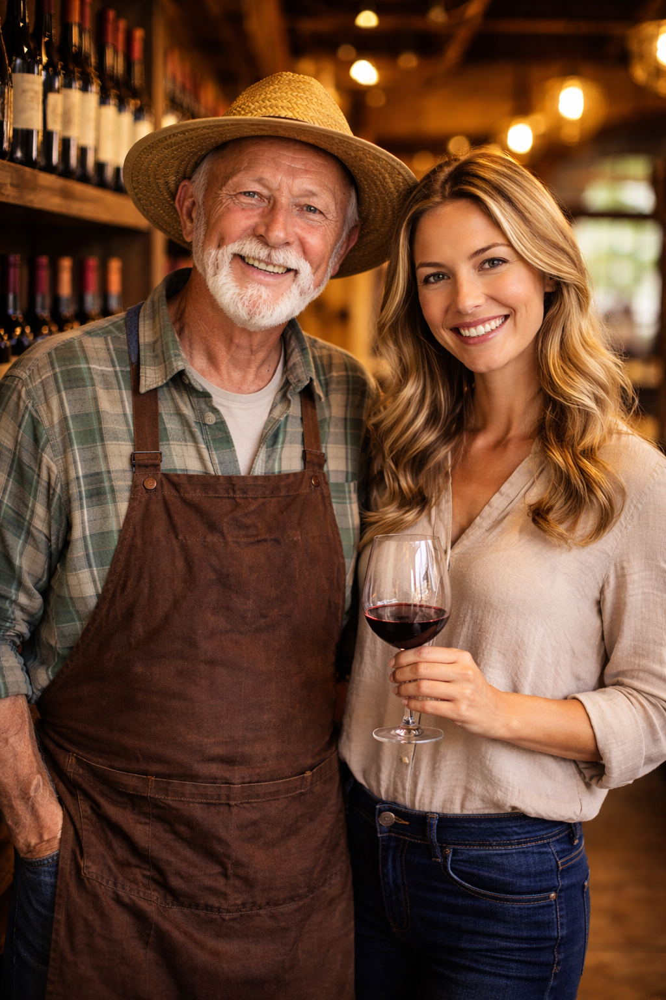

Nossa História

Uma jornada marcada por paixão, tradição e excelência.
O Início
A Vinheria Agnello atua no mercado paulistano há mais de 15 anos, contando com uma única loja física e oferecendo uma ampla seleção de rótulos nacionais e internacionais.
Seus vendedores são qualificados para orientar os clientes sobre tipos de uva, regiões produtoras, vinícolas e rótulos, contribuindo para uma escolha mais assertiva.

Tradição e Crescimento
Empresa familiar liderada por Giulie e sua filha Bianca, conta com seis colaboradores nas áreas administrativa, estoque e vendas.
Utiliza um sistema ERP para gestão financeira, controle de estoque e vendas (PDV), mantendo como diferencial o atendimento personalizado.
A equipe possui amplo conhecimento sobre vinhos, oferecendo recomendações e orientações aos clientes.
Esse atendimento consultivo é um dos grandes destaques da vinheria.

Hoje
Possuímos diversos clientes tanto por e-commerce quanto por venda presencial, priorizando sempre a satisfação dos nossos clientes.